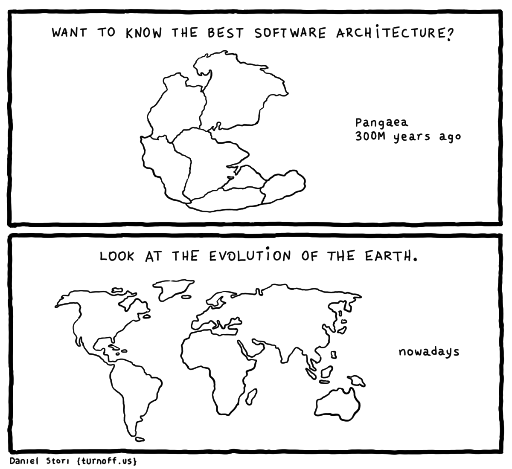

Like an architecture history, software architecture has changed and evolved. First of all, people started to live in cave, then they build their shed and tent, from them shed and tent to today's skyscraper and apartment, lots of come a long way. Like this, our software architecture started to evolve from early 2005.Microservices start to rise behind the hill and with Cloud Services, Docker and container orchestration, we have a more distributed, more scalable, and reliable solutions more than from the past. Why we choose that way and Is the old way still applicable for us? Let see what is the differences between monolith and microservices.
Monolithic Architecture
As a word monolith means monument or building made with a single massive stone or rock. With this perspective, if an application has one more module in a single repository, we can define it as a monolithic application. This type of applications generally combination of single client, single server and single database. This singularity comes with some eases, but comes with some difficulties too. A big challenge with this type of application; update, upgrade or crash and restart scenarios affect whole system situation. This kind of architectures also tightly coupled with interdependencies and increased information flow.
Advantages of Monolithic
- Easy bug tracking and end to end testing
- Easy development
- Easy deployment (generally once a week and big)
Disadvantages of Monolithic
- Technology dependency, hard to implement new technologies
- Complexity of one code base
- Can be lead anti-pattens
- CI/CD difficult
- uncontrollable growth with every new feature
Microservice Architecture
While monolithic applications is a single unified unit , microservices breaks it down into a collection of independent pieces.Like one piece a car toy versus a car maded with lego , every bricks has a unique job to done and create to whole system as together. These pieces can be deployable independently from each other, and has own logic , database , pipeline and codebases too.These applications communicate with each other through defined methods called APIs (Application Programming Interfaces).Big advantage of microservices scalability and reliability.
Advantages of Monolithic
- Independent components
- Easier to understanding
- Each service has its own codebase
- Loosely Coupled
- Scalability
- Reliablity
- Technology flexible
Disadvantages of Monolithic
- Integration testing is diffucult
- Deployment are more complex
- Operation cost for each apps
- own repo
- own codebase and CI/CD
- own database
- Additional hardware costs
Which one is the best ?
There is no exact answer, it depends on your application size, team knowledge and your budget.
If you a small team, don't want to do not have performance bottlenecks, don't want deal with Dev-Ops costs and have experiences with Monolithics frameworks, this could be best solution for you. Vice versa, if you have a big cluster and need to scalability and reliability and want to use one more technology in same time or want to experience to microservices, this could be best solution too.
